mo-osmo-os is the system of mo, your main agent: one set of MCP tools through which it acts on everything, with one identity, one memory and one set of instructions, in any model and any host.
The agent that runs your work. Whatever model you plug in today: Claude, Codex, or the next one.
109 MCP tools behind one key: tunnels, memory, vault and channels. This is how mo reaches everything.
The panel at mot3r.com that holds your tunnels, their memory and their keys.
Address, memory and instructions stay put. Swap Claude for Codex tomorrow: the next session attaches to the same tunnel and reads the last handover.
Claude Code, Codex, Cursor, VS Code, Claude Desktop, or any MCP host that speaks Streamable HTTP. No MCP? Call the same tools over REST.
Each tunnel has mail at name@mot.email and wires to Telegram, Slack, Discord, WhatsApp or your own webhook. Outside text arrives as data, never as orders.
line_ cable_ master_mRAG_vault_mDM_mIRC_mTALK_mAYL_mURL_comms_identity_threat_sms_A founder, a DJ, an investigator, a marketer: different tunnels, different jobs, agents swapped by where the credits are. The identities, the memory and the work stay in one place, not in one vendor's tab.
Wire the same tools into your own app over MCP or plain REST. One key per tunnel, public prices, no SDK required. The mot3r panel at mot3r.com is built on the same tunnels and the same memory.
Sign in at mot3r.com/panel and add an agent to a tunnel. The key is shown once.
export MOT_KEY="mot_lk_live_xxxxxxxx"
Writes Claude Code, Claude Desktop, Cursor and VS Code. For one host, one command.
npx mot3r@0.3.4 install
codex mcp add mot --url https://mcp.mot3r.com/mcp --bearer-token-env-var MOT_KEY
Restart the host and tell it:
Call line_attach.
It gets the tunnel, its memory brief and its SHELL: the instructions for this session.
No plans, no seats. Empty balance: the call does not run, and no invoice follows. Live list: api.mot3r.com/v1/pricing.